04.C Serial transfer of co-culture pairs
Pruning and competition time courses, 2026-04-10 experiment
1 Introduction
Strain naming convention: 1287 = Citrobacter koseri 1287, 1977 = Pseudomonas chlororaphis 1977, A = Ancestral/Streptomycin sensitive, E = Evolved/Streptomycin resistant.
Growth media convention: M9MM = M9 minimal media with glucose as the sole carbon source and supplemented with casamino acids. R2A = Reasoner’s 2 broth (complex growth medium).
This experiment ran for five 48-hour growth cycles (240 hours of growth total) where each well was serially diluted to a concentration of 10-4 (10,000 fold dilution) and then placed back in the incubating plate reader.
Here we inspect every cycle, drop the well pairs that grew where nothing should have grown, and plot the competition time course with all five cycles joined end to end.
2 Setup
2.1 Libraries
2.2 Global variables
2.3 Read data
Formatted in the prior step.
3 Inspect individual growth curves
3.1 Pseudomonas chlororaphis 1977
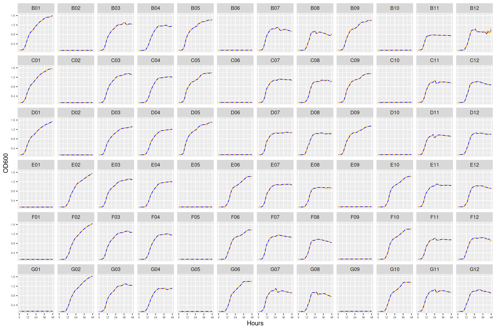
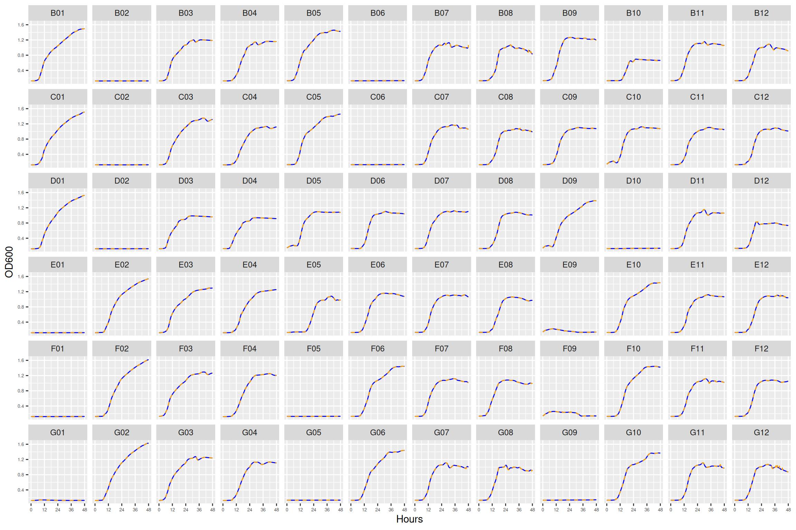
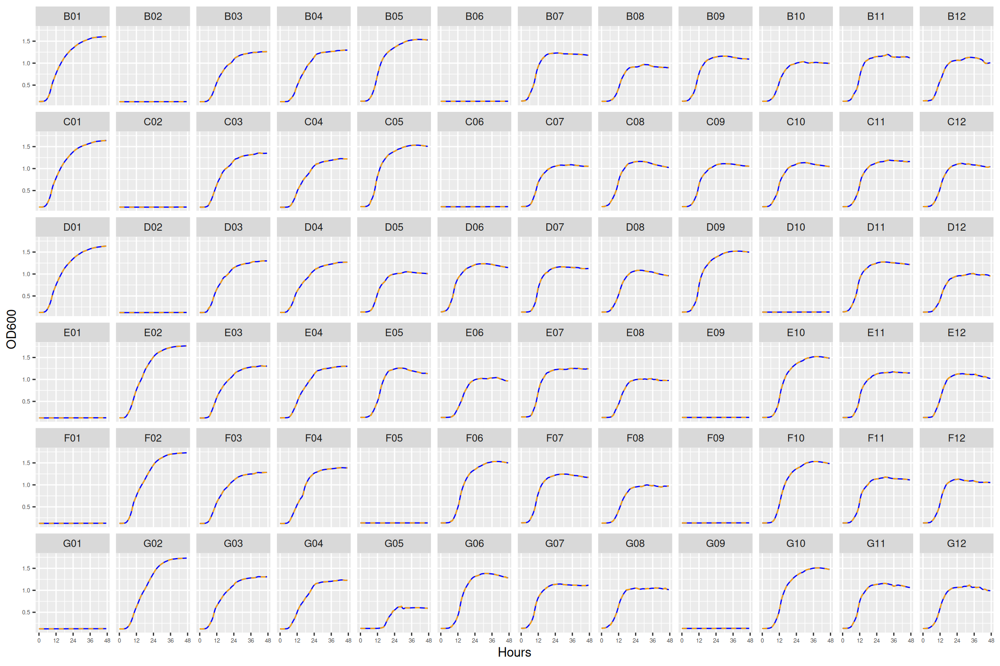
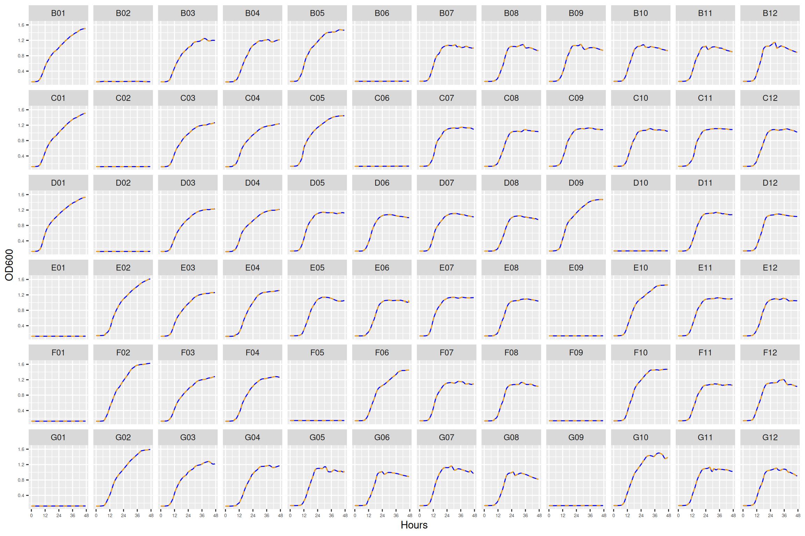
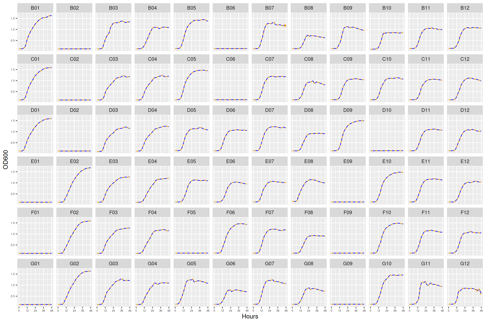
3.2 Citrobacter koseri 1287
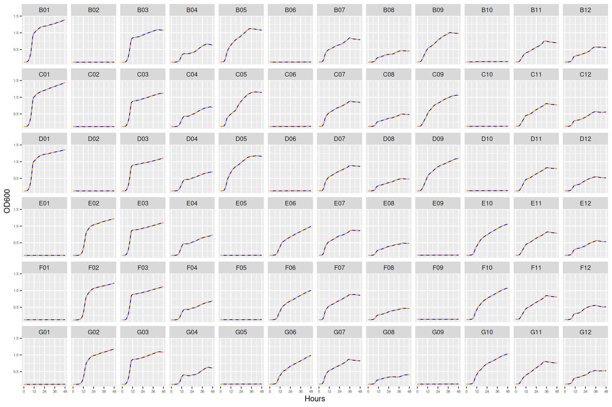
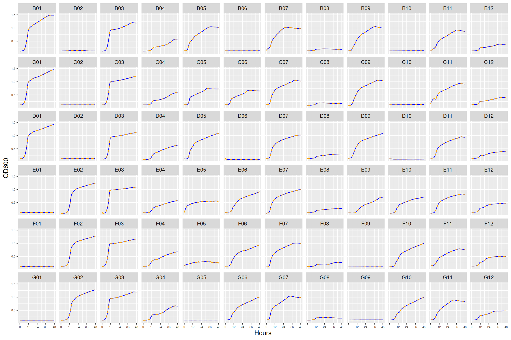
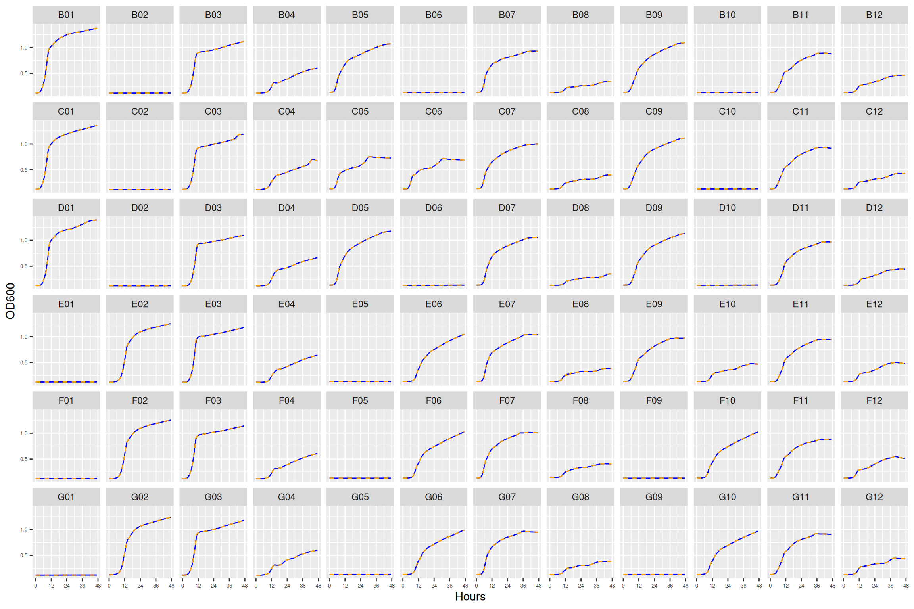
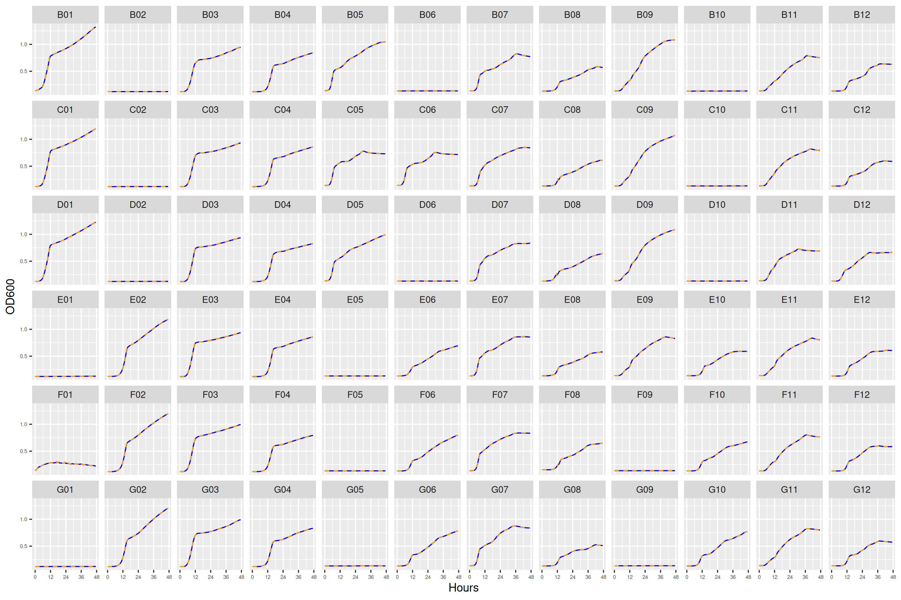
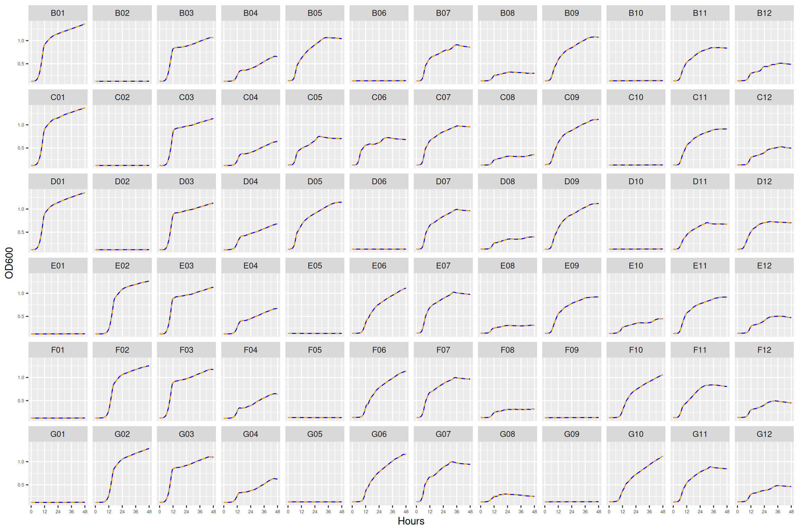
4 Blacklists
These are well pairs where there was growth where there should be none, identified by inspecting the plots above.
Show/hide code
blacklist_1287 <- tribble(
~strainID , ~plate_name , ~joined_well_pair ,
"H1287" , "c2" , "C05C06" ,
"H1287" , "c2" , "E05E06" ,
"H1287" , "c2" , "F05F06" ,
"H1287" , "c2" , "E09E10" ,
"H1287" , "c3" , "C05C06" ,
"H1287" , "c3" , "E09E10" ,
"H1287" , "c4" , "C05C06" ,
"H1287" , "c4" , "E09E10" ,
"H1287" , "c5" , "C05C06" ,
"H1287" , "c5" , "E09E10"
)
blacklist_1977 <- tribble(
~strainID , ~plate_name , ~joined_well_pair ,
"H1977" , "c2" , "D05D06" ,
"H1977" , "c2" , "E05E06" ,
"H1977" , "c3" , "D05D06" ,
"H1977" , "c3" , "E05E06" ,
"H1977" , "c3" , "G05G06" ,
"H1977" , "c3" , "B09B10" ,
"H1977" , "c3" , "C09C10" ,
"H1977" , "c4" , "D05D06" ,
"H1977" , "c4" , "E05E06" ,
"H1977" , "c4" , "G05G06" ,
"H1977" , "c4" , "B09B10" ,
"H1977" , "c4" , "C09C10" ,
"H1977" , "c5" , "D05D06" ,
"H1977" , "c5" , "E05E06" ,
"H1977" , "c5" , "G05G06" ,
"H1977" , "c5" , "B09B10" ,
"H1977" , "c5" , "C09C10"
)Now that I think about this there is no need to include monocultures on these plates, because we have that information from the previous non-serial transfer runs. This might save us some plates in the future.
Drop the blacklisted well pairs and keep only the wells that actually hold a culture. The pruned tables are written under their own names so that re-running this notebook never destroys the output of the formatting step.
Show/hide code
prune_wells <- function(df, blacklist) {
df |>
anti_join(blacklist, by = join_by(joined_well_pair, plate_name)) |>
filter(
(culture_type == "monoculture" &
str_detect(well, "[BCD]01|[BCD]05|[BCD]09") |
str_detect(well, "[EFG]02|[EFG]06|[EFG]10")) |
culture_type == "coculture"
)
}
coculture_gcurves_pruned_1287 <- prune_wells(
coculture_gcurves_sm_1287,
blacklist_1287
)
coculture_gcurves_pruned_1977 <- prune_wells(
coculture_gcurves_sm_1977,
blacklist_1977
)
readr::write_tsv(
coculture_gcurves_pruned_1287,
here::here(data_processed, "20260410_1287_gcurves_pruned.tsv")
)
readr::write_tsv(
coculture_gcurves_pruned_1977,
here::here(data_processed, "20260410_1977_gcurves_pruned.tsv")
)5 Growth curves with transfers combined
Show/hide code
cyclelines <- tibble(
plate_name = c("c1", "c2", "c3", "c4", "c5"),
cycle_hour = c(48, 96, 144, 192, 240)
)
plot_competition_timecourse <- function(df, title) {
df |>
mutate(hours_agg = hours + start_hrs_from_0) %>%
mutate(
strainID = paste0(
str_to_upper(str_sub(evolution, 1, 1)),
str_sub(strain, 2, 5)
),
growthenv = paste(media, strep_conc_ugml, sep = "_")
) %>%
mutate(
strainID = factor(
strainID,
levels = c("A1287", "E1287", "A1977", "E1977")
)
) %>%
summarize(
y = mean(OD600_rollmean),
sd = sd(OD600_rollmean),
.by = c(
hours_agg,
strainID,
evolution,
growthenv,
dilution,
culture_type
)
) %>%
ggplot(aes(
x = hours_agg,
)) +
geom_vline(data = cyclelines, aes(xintercept = cycle_hour), lty = 3) +
ggplot2::geom_ribbon(
aes(ymin = y - sd, ymax = y + sd, fill = factor(evolution)),
alpha = 0.5,
show.legend = FALSE
) +
ggplot2::geom_line(
aes(y = y, color = factor(evolution)),
linewidth = 0.75
) +
facet_grid(growthenv ~ culture_type) +
labs(
y = "OD",
x = "Total hours from start",
color = "Evolution",
title = {{ title }}
)
}5.1 Citrobacter koseri 1287
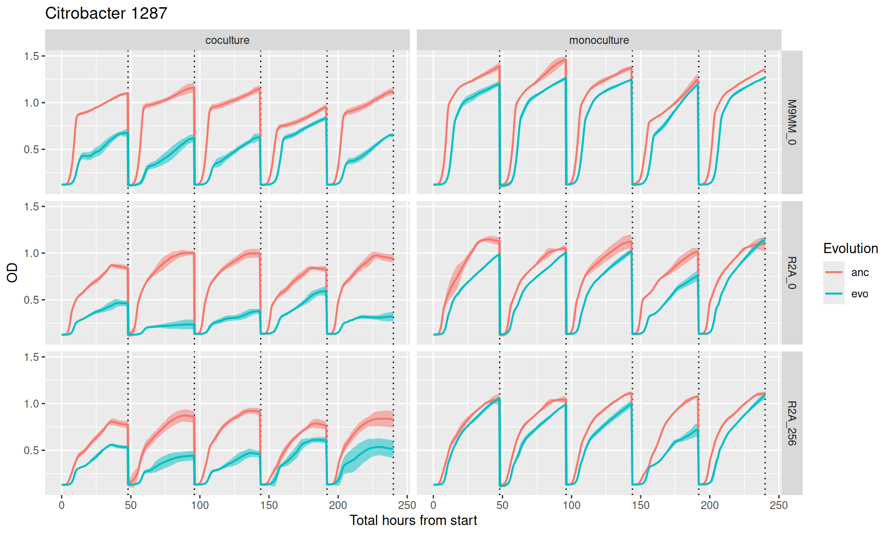
5.2 Pseudomonas chlororaphis 1977
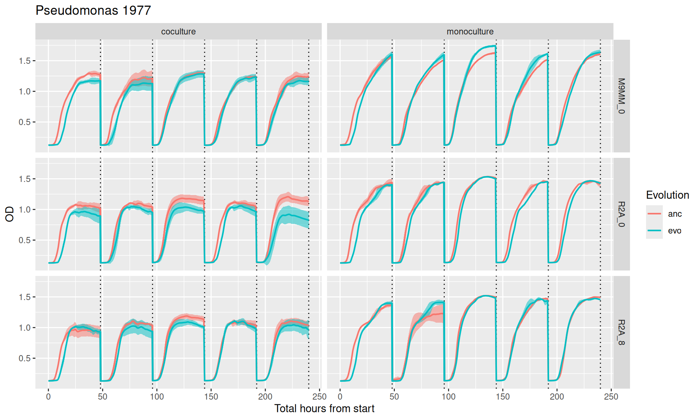